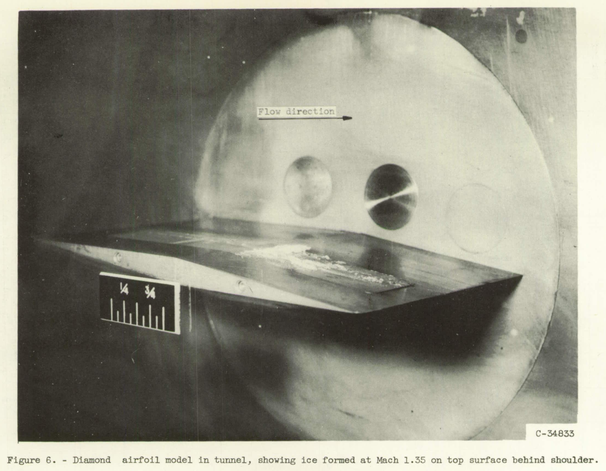

"snow-flakes will form and these will grow by vapor condensation and by evaporation of fog droplets" 1

A "mini-thread" on the evaporation of water drops
This thread will have a mix of NACA-era and post-NACA era data.
This thread will have a mix of NACA-era and post-NACA era data.

Figure 1. Modes of energy transfer for an unheated airfoil in icing conditions.
Data from the …
read more
This thread will focus on the use of thermodynamic heat and mass balance for icing and ice protection calculations.
There may be some overlap with ice protection systems, but the systems will not be detailed herein.
Here are references that include more general information on the NACA era and aircraft icing.
Lew Rodert, Epistemological Liaison, and Thermal De-Icing at Ames
"We Freeze to Please": A History of NASA's Icing Research Tunnel and the Quest for Flight …
read more
For the Thermodynamics tread and on, I will be using this style guide. Previous code may eventually be upgraded to this.
Target python version 3.7, and the corresponding Anaconda stack (version 2021-11). Avoid modules with deprecation …
read more“If you want to go somewhere, it’s best to find someone who has already been there” Robert Kiyosaki

Many new aircraft icing problems aren’t new at all. Like excavating a lost city, many surprises, answers …
read more"I'm burning through the sky, yeah
Two hundred degrees, that's why they call me Mister Fahrenheit
I'm travelling at the speed of light
I wanna make a supersonic woman of you"
from Queen, "Don't Stop Me Now"
This site is still under development.
Do not expected the site content, structure, nor links to be stable.
Blog (latest articles first)
Author: Donald E. Cook
Python programming style guide
read more
A single thermodynamic control volume is used for anti-ice calculations.
Donald Cook has over 30 years experience at a major airplane manufacturer in several areas of aircraft icing, including:
A pioneering test method …
read more
Predictions of the icing limit temperature were "sufficiently accurate …
read more"In order to provide qualitative information ..., numerical calculations of the drop paths in air flowing .. around a circular cylinder were made"
Water …
read more"... the effect on final results of droplets that do not freeze completely on the cylinders"
Conditions …
read more"It has been shown that the temperature of the surface of the wing in conditions of icing can be predicted with considerable exactitude from the temperatures measured in clear air."
"[LWC] limits have been calculated for a rotating cylinder.., and the results show that rotating cylinder measurements are of limited usefulness and may, in fact, prove entirely misleading as regards both water content and droplet size."
"The collection of ice by the cylinders is similar to the collection of ice by airplane components." 1


Calculating water drop trajectories with a differential analyzer analog
(from NACA-TN-2904)
The cylinder has a wide range of current …
read more"IT IS DESIRED to calculate the trajectories of small water droplets (fog) in air moving at high velocities across a cylinder."
Langmuir drop size distributions are defined, and water drop impingement on a collection of cylinders for use as …
read more"The meteorological data obtained with the multicylinder method are the only data available for the design of ice-protection equipment for aircraft"

Detailed procedures …
read moreMulticylinder instruments had good agreement for liquid water content and median effective drop diameter …
read more"For most practical problems involving measurements of droplet impingement on cylinders, the compressibility effect may be ignored."
The effect of the compressibility …
read more"Many data points were carefully calculated in order to determine precisely the rate of droplet impingement on the surface of a right circular cylinder."
"evaporation losses are ... very small (less than 1 percent) in the case of smaller obstacles (of icing-rate-measurement-cylinder size)."
Less that 1% of drops evaporate approaching …
read more
Evaporation and …
read more